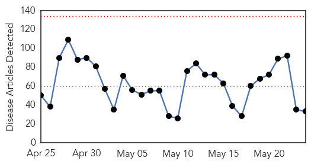

30 Day Trends
Web: 0 alerts, 0 warnings
Twitter: 2 alerts, 0 warnings
Top Articles:
- 0.976
- Raw Tuna from Sushi could be at heart of recent Salmonella Outbreak: CDC
- 0.967
- Children won’t get vaccines for TB until June, but Leo says it’s not a problem
- 0.945
- Acute Diarrhoea in adult
- 0.917
- Chicago Tribune
- 0.917
- Chicago Tribune
- 0.917
- Chicago Tribune
- 0.917
- Chicago Tribune
- 0.917
- Chicago Tribune
- 0.917
- Chicago Tribune
- 0.883
- Salmonella tied to raw tuna sickens 10 in Maricopa County
- 0.876
- Heat rise link to encephalitis
- 0.869
- NC Doctors learn lessons from flu season
- 0.795
- FollowProfile Picture POLITICS ‘Zimbabwe leads Africa with an adult literacy rate of over 90%.’ True or false?
- 0.784
- Dog owners warned about ‘Alabama Rot’
- 0.735
- Rising temperature in Varanasi brings along dehydration and heat stroke
- 0.709
- Plague found in ground squirrel near Boise
- 0.690
- Monday Medical: Protect yourself from foodborne illnesses
- 0.690
- California Dept. of Public Health still looking for source of bad tuna, salmonella scare
- 0.681
- Expert Raises Concern About TB’s Prevalence Rate In Edo
- 0.618
- Syphilis Cases Increased by 79 Percent in RI Last Year...
- 0.597
- The tricky issue of consent in adolescent mental health care
- 0.591
- Most E. Texas hospitals seeing drop in infection rates
- 0.591
- Most E. Texas hospitals seeing drop in infection rates
- 0.587
- Martin County health officials offer ‘Healthy Summer Tips’: Naegleria, Vibrio among health risks
- 0.567
- ‘Cousin marriages main reason behind rise in blood diseases’
- 0.558
- To Avoid Lyme Disease, Follow These Six Tips (ICYMI)
- 0.545
- Polish president concedes defeat to conservative challenger
- 0.545
- Iraqi forces lacked ‘will to fight’ over Iraq’s Ramadi, US says
- 0.545
- Thousands mourn slain Burundi opposition leader, vow intensified protests
- 0.545
- Putin enacts law banning ‘undesirable’ NGOs
- 0.545
- Malaysia finds mass graves at suspected human trafficking camps
- 0.518
- HIV+ girl awaits action over ‘medical error’
- 0.502
- Heat wave hits life in west Tarai
Top Tweets:
- 0.572
- No es el creador de la historia, es en el que se basó el personaje principal. @ReiserVerden https://t.co/N0dxMMy8M2
Web/News Articles
Tweets